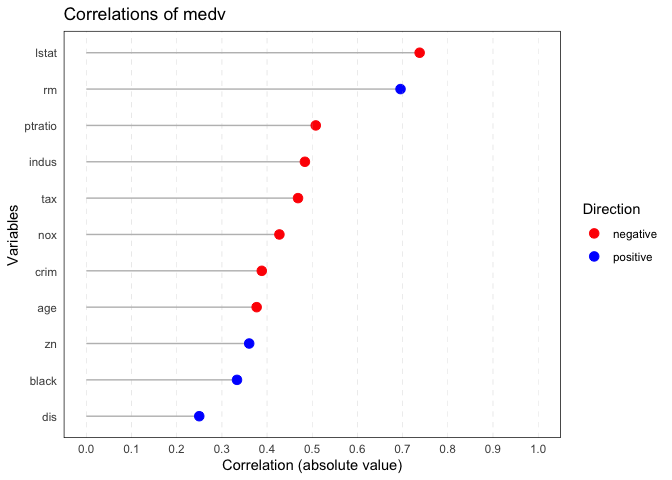

The goal of ryx is to provide a package for conducting correlation analysis, summarizing the results, and visualizing the findings in a publication-ready format. The package is designed to simplify the process of calculating correlation coefficients between a dependent variable (y) and one or more independent variables (x), and to produce easy-to-read summaries and plots for quick interpretation.
You can install the development version of ryx like so:
# Install the ryx package
install.packages("ryx")
#> Error in install.packages : Updating loaded packages
# Install the MASS package
install.packages("MASS")
#> Error in install.packages : Updating loaded packagesThis is a basic example which shows you how to solve a common problem: It uses the Boston dataset from the MASS package. The goal is to analyze the correlations between the dependent variable medv (median house value) and the independent variables in the dataset.
This command runs the correlation analysis on the Boston dataset, with medv as the dependent variable.
# Perform correlation analysis
result <- ryx(Boston, y = "medv")
# Print the result
print(result)
#> Correlations of medv with
#> variable r p_display sigif
#> lstat -0.738 5.08e-88 ***
#> rm 0.695 2.49e-74 ***
#> ptratio -0.508 1.61e-34 ***
#> indus -0.484 4.90e-31 ***
#> tax -0.469 5.64e-29 ***
#> nox -0.427 7.07e-24 ***
#> crim -0.388 1.17e-19 ***
#> age -0.377 1.57e-18 ***
#> zn 0.360 5.71e-17 ***
#> black 0.333 1.32e-14 ***
#> dis 0.250 1.21e-08 ***The print() function displays the correlation results in a table format, showing the correlation coefficient (r), p-value, and significance level for each independent variable.
# Visualize the correlation results
plot(result) The plot() function generates a ggplot-based visualization of the correlation results, displaying correlation strength and direction for each independent variable.
# Summarize the correlation analysis
summary(result)
#> Correlating lstat rm ptratio indus tax nox crim age zn black dis
#> The median absolute correlation was 0.427 with a range from 0.25 to 0.738
#> 11 out of 11 variables were significant at the p < 0.05 level.The summary(result) provides a summary of the correlation analysis, including the median absolute correlation, the range of correlations, and the number of significant correlations.